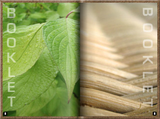
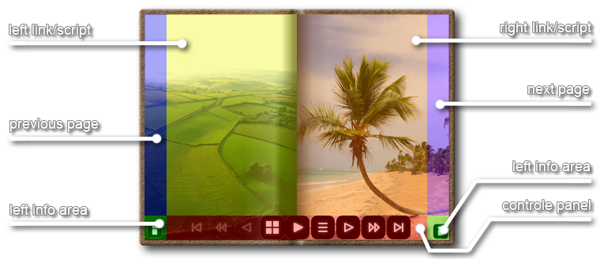

|  | Booklet.js 1.3 simulates an authentic looking album or book presenting photos, images and pictures of all sizes and with any aspect ratio. Includes covering, navigation, information, linking and auto generated visual table of contents.
Supports realtime filters in conjunction with the cvi_filter library (inc. tiltshift a.k.a. miniature fake filter). It also allows you to build interactive applications through the various user commands. It uses unobtrusive javascript to keep your code clean.
It works in all the major browsers: Mozilla Firefox 2+, Safari 2+, Chrome 4+, IE 6+ and Opera 9+. On older browsers, it'll degrade and your visitors won't notice a thing. |
Download the Booklet archive and include the following files (consider the order) into your webpage.
// only if you want to use image filters
<script type="text/javascript" src="cvi_filter_lib.js"></script>
// if you want to use language translations [de|el|en|es|fr|it|ja|ko|nl|pt|ru|zh]
<script type="text/javascript" src="booklet_lang.js"></script>
// this one is mandatory
<script type="text/javascript" src="booklet.js"></script>
To add a booklet object, just execute the function "booklet.add( element, { options } );" to a block-level element.
booklet.defaultCallback = ""; //STR function namebooklet.defaultLanguage = null; //OBJ e.g. [language format]booklet.defaultImagearray = null; //OBJ [data format]booklet.defaultMainwidth = 600; //INT 280|180-n (px width)booklet.defaultMainheight = 400; //INT 180|280-n (px height)booklet.defaultShade = 50; //INT 1-100 (% opacity)booklet.defaultShadow = 50; //INT 1-100 (% opacity)booklet.defaultDoublepage = false; //BOOLEAN 1 image fills 2 pagesbooklet.defaultCalendarmode = false; //BOOLEAN Top 2 Bottom instead of Left 2 Rightbooklet.defaultTopdownshadow = false; //BOOLEAN instead of leftTop to RightBottombooklet.defaultForcecaption = false; //BOOLEAN use the filename if caption is missingbooklet.defaultForceimginfo = false; //BOOLEAN append image dimensions and used filters to commentbooklet.defaultAutoplay = false; //BOOLEAN set automode to on|offbooklet.defaultVerbose = false; //BOOLEAN console output is more chatty (warnings)booklet.defaultBuffered = false; //BOOLEAN set render buffer to on|offbooklet.defaultNoshadow = false; //BOOLEAN set shadow to on|offbooklet.defaultNocover = false; //BOOLEAN set cover to on|offbooklet.defaultNopanel = false; //BOOLEAN lock the navigation panelbooklet.defaultNoradius = false; //BOOLEAN set cover radius to on|offbooklet.defaultNotoc = false; //BOOLEAN toc equals table of contentsbooklet.defaultTocfirst = false; //BOOLEAN startup with Table Of Contentsbooklet.defaultToctooltip = false; //BOOLEAN tooltip instead of overlay textbooklet.defaultPoweroftwo = 4; //INT 2x2 | 3x3 | 4x4 ... TOC thumbs per pagebooklet.defaultPagecolor = '#f8f8f8'; //STR '#000000'-'#ffffff'booklet.defaultCovercolor = '#808080'; //STR '#000000'-'#ffffff'booklet.defaultSelectorcolor = '#000000'; //STR '#000000'-'#ffffff'booklet.defaultCovertexture = ''; //STR (image source)booklet.defaultTextureopacity = 100; //FLT 1-100 (% opacity)booklet.defaultInfobgopacity = 50; //FLT 1-100 (% opacity)booklet.defaultLayeropacity = 50; //FLT 1-100 (% opacity)booklet.defaultLayercolor = '#ffffff'; //STR '#000000'-'#ffffff'booklet.defaultInfobgcolor = '#000000'; //STR '#000000'-'#ffffff'booklet.defaultInfotxcolor = '#ffffff'; //STR '#000000'-'#ffffff'booklet.defaultImprintheader = ""; //STRbooklet.defaultImprintbody = ""; //STRbooklet.defaultImprintfooter = ""; //STRbooklet.defaultNotrans = false; //BOOLEAN no transposing from Mfgcolor to Mftcolorbooklet.defaultMeter = false; //BOOLEAN show delay meter while auto playingbooklet.defaultMfgcolor = '#008000'; //STR meter foreground colorbooklet.defaultMftcolor = '#ff0000'; //STR meter foreground destination colorbooklet.defaultMbgcolor = '#ffffff'; //STR meter background colorbooklet.defaultMopacity = 0.5; //FLOAT 0.1-1.0 meter opacitybooklet.defaultMsize = 32; //INT 24-min(width,height) meter dimensionbooklet.defaultMposx = 10; //INT 0-(width-msize) meter position xbooklet.defaultMposy = 10; //INT 0-(height-msize) meter position y*** depends on: cvi_filter_lib.js (syntax at: filter.netzgesta.de) ***booklet.defaultFilter = null; //OBJ e.g. [{f:'grayscale'},{f:'emboss', s:1}...]booklet.defaultFiltertoc = false; //BOOLEAN filter also the thumbnailsbooklet.defaultForceglobal = false; //BOOLEAN force global filter over local filter**********************************************************************booklet.defaultAnimsteps = 0; //INT 0-n equals anim steps (0 == use pxperstep value)booklet.defaultPxperstep = 16; //INT 1-n equals pixel per stepbooklet.defaultFramedelay = 33; //INT 20-50 equals milli seconds (1/1000)booklet.defaultPlaydelay = 0; //INT 0-n equals secondsbooklet.defaultLoadtimeout = 3; //INT 1-60 equals secondsbooklet.defaultButtonsize = 32; //INT 24|32|40|48|56|64 (px)booklet.defaultButtonradius = 100; //FLT 0.001-100 (% of half size)booklet.defaultButtonfgcolor = '#ffffff'; //STR (text) hex color declaration '#000000'-'#ffffff'booklet.defaultButtonbgcolor = '#000000'; //STR (background) hex color declaration '#000000'-'#ffffff'booklet.defaultOverlayimage = "images/logo.png"; //STR (text) background-imagebooklet.defaultOverlaystyle = "font-weight:bold; font-size:14px; color:grey;"; //STR (text) style sheet declaration e.g. "color: black;" or style sheet classes e.g. "overlay text"booklet.defaultOverlayoptions = {color:'white', opacity:0.5}; //OBJ default values [overlay syntax]booklet.defaultBusyoptions = {color:'#000000', size:100, type:'o'}; //OBJ default values [busy syntax]color : 'white' //STR css color declaration e.g. 'black' or '#000000' or 'rgb(0,0,0)'opacity : 0.5 //FLT 0.001 - 1.0color : '#000' //STR '#000000' - '#ffffff' or '#000' - '#fff'size : 32 //INT 16 - 512 (pixel)type : 'tube' //STR 'circle|oval|polygon|rectangle|tube' or 'c|o|p|r|t'iradius : 8 //INT 6 - 254 (pixel)weight : 3 //INT 1 - 254 (pixel)count : 12 //INT 5 - 36 (rays)speed : 96 //INT 30 - 1000 (millisec)minopac : 0.25 //FLT 0.0 - 0.5 (opacity)lang.overlaytext = "loading images...";lang.playbutton = "play/pause";lang.nextbutton = "next";lang.prevbutton = "previous";lang.firstbutton = "first";lang.lastbutton = "last";lang.fwardbutton = "5x forward";lang.bwardbutton = "5x backward";lang.menubutton = "back to contents";lang.listbutton = "imprint/epilog";lang.tablebutton = "table of contents";data = [{source : 'path/file.jpg', //STR mandatory image path & file (minimum dimension 64x64)imgshift : 0.5, //FLT optional image shift value (0==top|left, 0.5==center, 1==bottom|right)delay : null, //FLT optional delay value (seconds)caption : '', //STR optional captioncomment : '', //STR optional comment (inc. html-tags)title : '', //STR optional tooltiplink : '', //STR optional URL (js-function by "javascript:...")target : '_self', //STR optional target ('_self'|'_blank'|'...')filter : [{f:'grayscale'},{f:'emboss', s:1}...], //OBJ optional (depends on cvi_filter_lib.js)
}, {source: 'image.jpg'}]booklet.add(element[, options]);element == block-level elementoptions e.g. {mainwidth: 180, mainheight: 280, ...}shade : 50, //INT 1-100 (% opacity)shadow : 50, //INT 1-100 (% opacity)covercolor : '#808080', //STR '#000000'-'#ffffff'covertexture : '', //STR (image source)textureopacity : 100, //FLT 1-100 (% opacity)topdownshadow : false, //BOOLEAN instead of leftTop to RightBottomnoshadow : false, //BOOLEAN set shadow to on|offnocover : false, //BOOLEAN set cover to on|offnoradius : false, //BOOLEAN set cover radius to on|offoverlayimage : "images/logo.png", //STR (text) background-imageoverlaystyle : "font-weight:bold; font-size:14px; color:grey;", //STR (text) style sheet declaration e.g. "color: black;" or style sheet classes e.g. "overlay text"overlayoptions : {color:'white', opacity:0.5}, //OBJ default values [overlay syntax]busyoptions : {color:'#000000', size:100, type:'o'}, //OBJ default values [busy syntax]callback : "", //STR function namelanguage : null, //OBJ e.g. [language format]imagearray : null, //OBJ [data format]mainwidth : 600, //INT 280|180-n (px width)mainheight : 400, //INT 180|280-n (px height)doublepage : false, //BOOLEAN 1 image fills 2 pagescalendarmode : false, //BOOLEAN Top-2-Bottom instead of Left-2-Rightautoplay : false, //BOOLEAN set automode to on|offverbose : false, //BOOLEAN console output is more chatty (warnings)buffered : false, //BOOLEAN set render buffer to on|offnopanel : false, //BOOLEAN lock the navigation panelanimsteps : 0, //INT 0-n equals anim steps (0 == use pxperstep value)pxperstep : 16, //INT 1-n equals pixel per stepframedelay : 33, //INT 20-50 equals milli seconds (1/1000)playdelay : 0, //INT 0-n equals secondsloadtimeout : 3, //INT 1-60 equals secondspagecolor : '#f8f8f8', //STR '#000000'-'#ffffff'filter : null, //OBJ e.g. [{f:'grayscale'},{f:'emboss', s:1}...]filtertoc : false, //BOOLEAN filter also the thumbnailsforceglobal : false, //BOOLEAN force global filter over local filter*** depends on: cvi_filter_lib.js (syntax at: filter.netzgesta.de) ***notoc : false, //BOOLEAN toc equals Table of contentspoweroftwo : 4, //INT 2x2 | 3x3 | 4x4 ... toc thumbs per pagetocfirst : false, //BOOLEAN startup with Table Of Contentstoctooltip : false, //BOOLEAN tooltip instead of overlay textselectorcolor : '#000000', //STR '#000000'-'#ffffff'layeropacity : 50, //FLT 1-100 (% opacity)layercolor : '#ffffff', //STR '#000000'-'#ffffff'forcecaption : false, //BOOLEAN use the filename if caption is missingforceimginfo : false, //BOOLEAN append image dimensions and used filters to commentinfobgopacity : 50, //FLT 1-100 (% opacity)infobgcolor : '#000000', //STR '#000000'-'#ffffff'infotxcolor : '#ffffff', //STR '#000000'-'#ffffff'imprintheader : "", //STRimprintbody : "", //STRimprintfooter : "", //STRbuttonsize : 32, //INT 24|32|40|48|56|64 (px)buttonradius : 100, //FLT 0.001-100 (% of half size)buttonfgcolor : '#ffffff', //STR (text) hex color declaration '#000000'-'#ffffff'buttonbgcolor : '#000000', //STR (background) hex color declaration '#000000'-'#ffffff'notrans : false, //BOOLEAN no transposing from Mfgcolor to Mftcolormeter : false, //BOOLEAN show delay meter while auto playingmfgcolor : '#008000', //STR meter foreground colormftcolor : '#ff0000', //STR meter foreground destination colormbgcolor : '#ffffff', //STR meter background colormopacity : 0.5, //FLOAT 0.1-1.0 meter opacitymsize : 32, //INT 24-min(width,height) meter dimensionmposx : 10, //INT 0-(width-msize) meter position xmposy : 10, //INT 0-(height-msize) meter position ybooklet.data(element, imagearray [, options]);element == block-level elementimagearray == OBJECT [data format]options e.g. {framedelay: 40, nopanel: false, ...}callback : "", //STR function namelanguage : null, //OBJ e.g. [language format]forcecaption : false, //BOOLEAN use the filename if caption is missingforceimginfo : false, //BOOLEAN append image dimensions and used filters to commentfilter : null, //OBJ e.g. [{f:'grayscale'},{f:'emboss', s:1}...]filtertoc : false, //BOOLEAN filter also the thumbnailstocfirst : false, //BOOLEAN startup with Table Of Contentsforceglobal : false, //BOOLEAN force global filter over local filterautoplay : false, //BOOLEAN set automode to on|offverbose : false, //BOOLEAN console output is more chatty (warnings)buffered : false, //BOOLEAN set render buffer to on|offnopanel : false, //BOOLEAN lock the navigation paneltoctooltip : false, //BOOLEAN tooltip instead of overlay textimprintheader : "", //STRimprintbody : "", //STRimprintfooter : "", //STRnotrans : false, //BOOLEAN no transposing from Mfgcolor to Mftcolormeter : false, //BOOLEAN show delay meter while auto playingmfgcolor : '#008000', //STR meter foreground colormftcolor : '#ff0000', //STR meter foreground destination colormbgcolor : '#ffffff', //STR meter background colormopacity : 0.5, //FLOAT 0.1-1.0 meter opacitymsize : 32, //INT 24-min(width,height) meter dimensionmposx : 10, //INT 0-(width-msize) meter position xmposy : 10, //INT 0-(height-msize) meter position yanimsteps : 0, //INT 0-n equals anim steps (0 == use pxperstep value)pxperstep : 16, //INT 1-n equals pixel per stepframedelay : 33, //INT 20-50 equals milli seconds (1/1000)playdelay : 0, //INT 0-n equals secondsloadtimeout : 3, //INT 1-60 equals secondsbooklet.play(element); (start playing)booklet.stop(element); (stop playing)booklet.first(element); (show first image)booklet.prev(element); (show previous image)booklet.show(element, image_number); (show this image)booklet.next(element); (show next image)booklet.last(element); (show last image)FLOAT = booklet.version;STRING = booklet.released;BOOLEAN = booklet.canvas();BOL|INT|STR = booklet.get(element, ['setup'|'blocked'|'curling'|'playing'|'current'|'total'|'viewmode'|'origin'|'imginfo', image_number] );setup == BOOLEAN uninitializedblocked == BOOLEAN unaccessiblecurling == BOOLEAN transition in actionplaying == BOOLEAN autoplay in actioncurrent == INTEGER current image number (starting with zero)total == INTEGER no. of all imagesviewmode == STRING matches "image" or "toc"origin == STRING location protocol & hostimginfo == OBJECT [name|source|abs_url|diff_origin|filter|width|height]booklet.set(element, ['playdelay'|'nopanel'], value);playdelay == INTEGER 0 - n secondsnopanel == BOOLEAN true | false
booklet.remove(image, value);value == BOOLEAN (fade out)
booklet.add(document.getElementById('my_div'));if(typeof $=='undefined') {function $(v) {return(document.getElementById(v));}}if(booklet.canvas()) {booklet.add($('my_div'));} else {alert('Sorry jurassic-guy!');}booklet.add($('my_div'), {mainwidth:800, mainheight:600});booklet.set($('my_div'),'nopanel',false);<button type="button" onclick="booklet.set($('my_div'),'play',true);"> > </button><button type="button" onclick="booklet.set($('my_div'),'stop',true);"> || </button>alert(booklet.get($('my_div'),'current'));alert('booklet: '+booklet.version+' ('+booklet.released+')');booklet.show($('my_div'),52);booklet.data($('my_div'),my_options);booklet.remove($('my_div'),true);You'll get access to additional features by the following support libraries (not a part of distribution):
filter : [{#1 filter options},{#2 filter options}...];
options e.g. {f: 'contrast', s: 1.5 }f == STRING filter name e.g. "invert" Default: null (required)
"anaglyph"1.7 Creates a 3D anaglyph from a single image [no args]
"invert"1.0 Reverses all colors of the image [no args]
"invertalpha"1.0 Reverses the transparency of the image [no args]
"grayscale"1.0 Converts the image into grayscale [no args]
"solarize"1.0 Solarizes the image by negating the colors [no args]
"sepia"1.0 Applies the well-known sepia coloring to the image [no args]
"threshold"1.0 Converts the image to black&white (s<1 == darker and s>1 == brighter)
"posterize"1.4 Posterizes the image by quantizing each channel to a limited number of levels
"tritone"1.5 Applies 3 colors for low|mid|high range according to the brightness of the image
"mixrgb"1.5 Mixes the RGB channels with the other two channels
"exposure"1.4 Simulates changing the exposure of the image
"gamma"1.0 Standard gamma correction (s<1 == darker and s>1 == brighter)
"brightness"1.0 Change brightness (s<1 == darker and s>1 == brighter)
"contrast"1.0 Change contrast (s<1 == lower and s>1 == higher)
"adjustrgba"1.0 Adjust the red & green & blue & alpha channel of the image (s == [r,g,b,a])
"adjusthsba"1.0 Adjust hue & saturation & brightness & alpha channel of the image (s == [h,s,b,a])
"adjustyuva"1.6 Adjust luminance & blue–yellow chrominance & red–cyan chrominance & alpha channel of the image (s == [y,u,v,a])
"colorkey"1.6 Set alpha to 0 if pixel color values are higher than min and lower than max rgb color
"chromakey"1.6 Set alpha to 0 if pixel hue & saturation & brightness matches
"multiplyalpha"1.0 Multiplies the colors by the alpha values [no args]
"unmultiplyalpha"1.0 Unmultiplies the alpha values from the colors [no args]
"alphamask"1.0 Creates an alpha mask of the image [no args]
"stackblur"1.0 Blurs the image (result is similar to gaussian bluring)
"smooth"1.3 Smoothes the image (result is similar to bluring)
"spinblur"1.2 Blurs by rotating the centered image
"zoomblur"1.2 Blurs by zooming the centered image
"motionblur"1.2 Blurs by moving the image to a defined direction
"tiltshift"1.0 Blurs partly to create the miniature fake effect
"outline"1.5 Creates grayscaled outline images by different operators (e.g. sobel, prewitt...).
"convolve"1.0 Use your own 3x3 matrix via option m=[[n,n,n],[n,n,n],[n,n,n]]
"blur"1.0 Bluring the image by (in build and extendable cvi_matrix object) convolution
"median"1.0 Smoothes grainy images by (in build and extendable cvi_matrix object) convolution
"sharpen"1.0 Makes image sharper by (in build and extendable cvi_matrix object) convolution
"sharper"1.0 Makes image even sharper by (in build and extendable cvi_matrix object) convolution
"bumplt"1.0 Embosses the image by (in build and extendable cvi_matrix object) convolution
"bumpbr"1.0 ...
s == FLOAT/OBJECT multiplier(s) e.g. 0-255 Defaults to... (optional)
1 if f=="zoomblur|spinblur" Distance (px)
1 if f=="stackblur" Radius (1-180) (only if cvi_stackblur.js is loaded)
1 if f=="smooth" Radius (px 1-10)
1 if f=="posterize" Number of levels (1-16)
1 if f=="threshold" Multiplier of 127 (0-2)
1 if f=="brightness|contrast|gamma|exposure" Multiplier of existing value (0-255)
[1,0] if f=="motionblur" Distance (px) and angle (0-360)
[0.5,0.4, if f=="tiltshift" Unmask position (0.0-1.0) and size (0.0-1.0)
0,4] and horizontal or vertical orientation (0|1) and blur radius (px 1-8)
[auto,0] if f=="convolve" or m!=null. Divisor of convolution result (-1==auto),
useable for normalization and bias (0-255) for brightness addition
[1,0, if f=="outline" Divisor of convolution result, bias (0-255)
'name'] and operator ('sobel'|'scharr'|'prewitt'|'kirsh'|'roberts')
[1,1,1,1] if f=="adjustrgba" red, green, blue, alpha. Multipliers of existing values (0-255)
[1,1,1,1] if f=="adjusthsba" hue, saturation, brightness, alpha. Multiply existing values (0-255)
[1,1,1,1] if f=="adjustyuva" luminance, blue–yellow chrominance, red–cyan chrominance, alpha. Multiply existing values (0-255)
[0,0,0,0,0] f=="chromakey" hue (0-360) and hue tolerance, min saturation, min brightness, max brightness (0-100)
[[0,0,0], if f=="colorkey" equals rgb min and rgb max triplet (0-255)
[0,0,0]]
[[1,1,1], if f=="mixrgb" Mix into r, g, b with...
[1,1,1]] ...bluegreen, redblue, greenred as triplets [0-255,0-255,0-255]
[[0,0,0], if f=="tritone" low|mid|high range colors as...
[0,0,0], ...rgb triplets [0-255,0-255,0-255]
[0,0,0]]
m == OBJECT kernel matrix e.g. [[n,n,n],[n,n,n],[n,n,n]] Default: null (optional) Generally: The larger the canvas area the higher the needed cpu/gpu power.
The concept behind booklet (lots of mouse-over events) makes it not very useable on mouseless platforms. Nevertheless a nasty webkit bug (iOS only) prevents booklet to view images in the correct manner. On the other hand, it runs well on Android.
There are multiple mouseover-areas, fading panels in and out!

At initial release of booklet.js, Internet Explorer 9 was not available as a final release (beta only). So it's canvas implementation was not completed at this stage (missing Composite Operation), and a few bugs had to be eliminated. That are the reasons why the tiltshift filter is broken, and why some mouse-over elements do not fade softly!
Due to a bunch of reasons the Internet Explorer 6/7/8 version is missing a lot of features. No table of contents. No filters. No button inverting. No soft fading. Page turn is just a fake.
If you want to use filters with images from other origins, you need a simple proxy to outsmart the security mechanism. This is because of the Same origin policy. SOLUTION: use a proxy like "imgproxy.php?url=" as a prefix in path (imgproxy.php is open source and part of the distribution)!
In old browsers, the script degrades and your visitors will notice the fallback content.
Version 1.3
Booklet.js is distributed under this LICENSE. License permits free of charge use on non-commercial and private web sites only under special conditions (as described in the license). This license equals neither "open source" nor "public domain". There are also Commercial Software Licenses available.
Images used are copyrighted and are used for demonstration only.
cvi.netzgesta.de also visit CVI-lab, CVI-dev, S5 Reloaded and AJAX-FilmDB